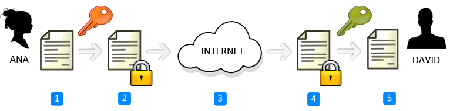
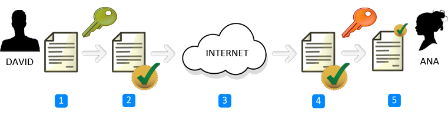

Entre otros ..
“La criptografía asimétrica o criptografía de clave pública (en inglés public key cryptography) es el método criptográfico que usa un par de claves para el envío de mensajes. Las dos claves pertenecen a la misma persona que ha enviado el mensaje. Una clave es pública y se puede entregar a cualquier persona, la otra clave es privada y el propietario debe guardarla de modo que nadie tenga acceso a ella.” - Wikipedia
Ana intenta mandarle un mensaje a David
David intenta mandarle un mensaje firmado a Ana
Debemos observar que la criptografía de clave pública necesita establecer una confianza en que la clave pública de un usuario, es decir el único que posee la clave privada correspondiente es el usuario auténtico al que pertenece. Cuanto más fiable sea el método más seguridad tendrá el sistema
Los modelos de confianza utilizados son:
Algunos de los algoritmos más populares son:
La criptografía asimétrica utiliza dos claves (pública y privada) generadas por un algoritmo asimétrico para proteger las claves y la distribución de las mismas. Y una clave secreta es generada a través de un algoritmo simétrico y utilizado para cifrar grandes cantidades de datos. Así, obtenemos un sistema híbrido, que utiliza ambas tecnologías.
Juan quiere enviarle un mensaje a Pablo y quiere que solamente él pueda leerlo.
Juan va a cifrar el mensaje con la clave secreta (simétrica). Después, Juan va a cifrar la clave simétrica utilizando la clave pública de Pablo.
Pablo va a recibir una clave cifrada que solamente él puede descifrar (utilizando su clave privada).
Una vez obtenida la clave, va a utilizarla para descifrar los datos del mensaje con el algoritmo simétrico.
~ gpg --gen-key~ gpg --list-keys~ gpg --list-secret-keys